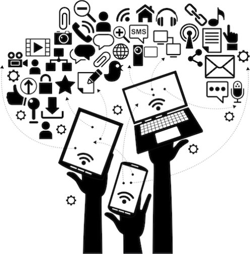

All India Shri Shivaji Memorial Society’s Institute of Information Technology, Pune every year conducts inter department activities in the month of September. These activities are special in terms to mark the identity of each department. One such department, known for shining above the horizon is the Department of Computer Engineering.
Every year Computer Engineering Students’ Association organizes various activities throughout the year. September being the month of inauguration marks the start of these events. Computer Engineering Students’ Association 2K20 famously known as CESA 2K20 has embarked on the theme of AATMA NIRBHAR BHARAT and conglomerated it with Industrial Vision 4.0. The aim of the association is to be the torch bearer of this initiative and create a future ready work force. Our aim is to inspire the students and to join this journey of nation building. The whole initiative is being pioneered under the guidance of our dynamic principal Dr. P. B. Mane and Head of the Department Dr. S. N. Zaware. The whole activity is coordinated under the able leadership of Staff coordinator Mr. Chetan Aher and the President of the council Master Kanaad Sanjay Rampurkar. He is supported by an excellent administrative team comprising of Ms. Sejal Oswal (Vice President), Master Siddhesh Gholap (BE Representative), Ms Neha Ghole & Master Suraj Nitture as treasures, Master Abhishek Gaikwad and Ms. Evana Thomas as Secretaries, Ms. Riya Reji and Master Kshitij Thakur as Administrators.
The pillars of CESA 2K20 are help high by three specialized domains
 Avishkar - CESA’s own Technical Events
Avishkar - CESA’s own Technical Events
Avishkar committee led by the secretaries Master Prem Pawar, Master Vivek Wagaj and Ms. Annette John comprises of a team of technically sound heads and executives. They promise to give you wonderful events not only to engage you during these lockdown but also to learn new technical skills. We offer to provide a platform to compete with the best and improve your technical skills. There are online coding competitions, AATMA NIRBHAR HACKATHON being the flagship events, tech scribble and many more.
Gandharva - CESA’s own Cultural Events
Gandharva committee led by the secretaries Master Rachit Deo, Ms. Tanjila Momin and Ms. Tanvi Patil comprises of a team of culturally creative heads and executives. They promise to give you extravagant events so as to showcase your talents on social media platforms. No lockdown can stop the flow of talents and skills. We not only understand the importance of art and culture in life but also feel it to be necessary stress booster during this difficult phase. Our Instagram handle is the best example of the talent promoting attitude of CESA and Gandharva.
 Sangharsha - CESA’s own Sports Events
Sangharsha - CESA’s own Sports Events
Sangharsha committee led by the secretaries Master Prasad Chavan, Master Vishal Rite and Ms. Ketaki Upare comprises of a team of physically strong heads and executive. They promise to entertain you with all the physical activities virtually and engage you to be fit. A healthy mind resides in healthy body and one must neglect sports during these lockdown. Our committee focuses on promoting the physical wellness of the students. In this journey of becoming aatma Nirbhar bharat, yoga has been the pioneer in the world for fitness. Taking this inspiration, our Sangharsha is to make our department physically fit.
 Aadhaar - Cesa’s own Media and Management Team
CESA cannot be complete without AADHAAR. Media is the most important part of any committee and event. It is the mirror of any association. Our Media Committee is led by Master Premraj Pawade and Master Yash Salokhe, the digital
content being created to potray the excellence of the event is the creation of Master Rohan Patil and Master Vaibhav Pawar. We have an excellent Discipline team so as to ensure social media responsibility by Master Kaushal Parmar and
Master Rohit Yadav. Our documentation team ensures we capture the memories of all the winners and participants and the records of the events. It is managed by Ms. Kakshi Dongre, Ms. Pratiskha Pandhare, Ms. Vaishnavi Shirbhate , Ms.
Pooja Khandelwal.
Computer Department has been the department securing the highest number of placements in the college. Carrying forward this legacy Master Ajit Patare and Ms. Nikita Gore , T&P Secretaries, keep planning activities so as to
ensure students of the department are well updated with the industry and are placement ready.
BUT NOT THE LEAST our support systems, the wonderful faculties and students of Computer Department without whom no events can be successful. So come and be a part of this AATMA NIRBHAR
JOURNEY with an INDUSTRIAL VISION of 4.0